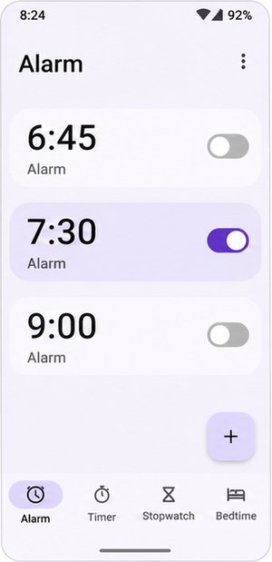
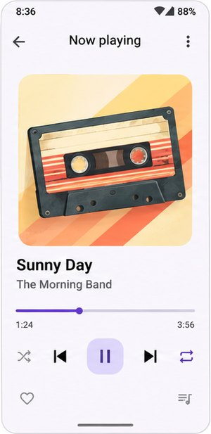
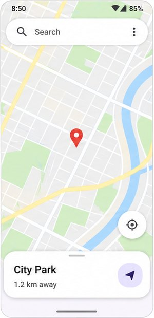
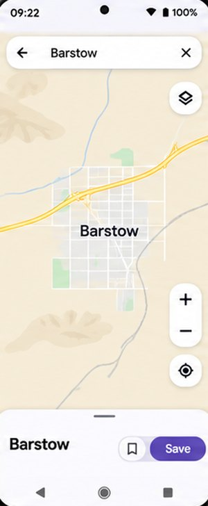
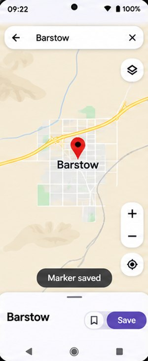
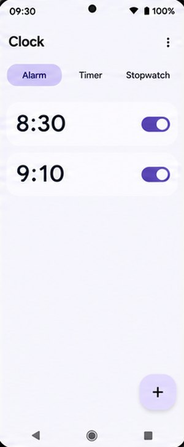
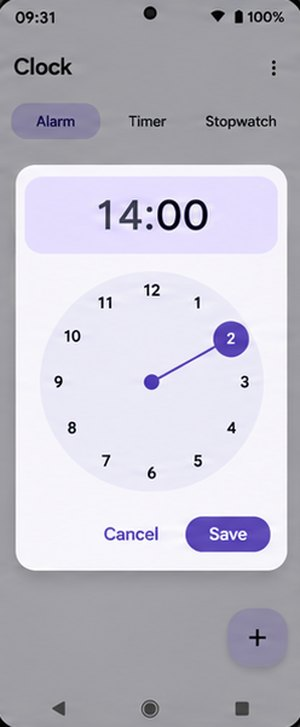
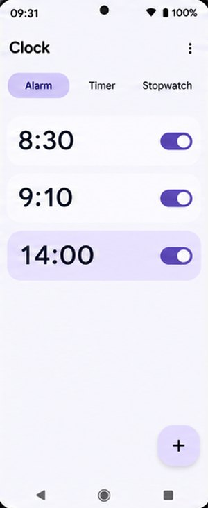
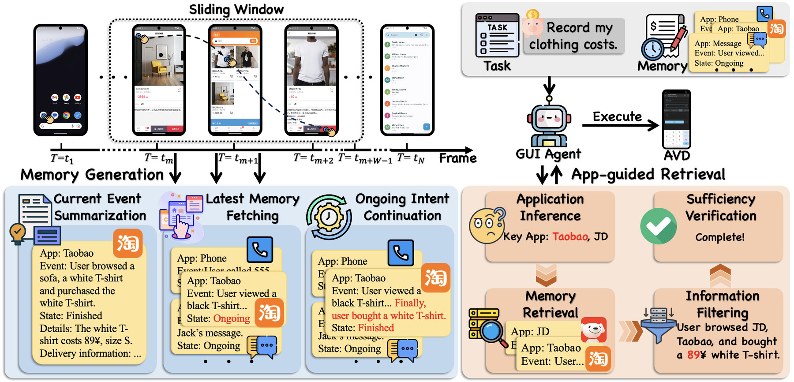
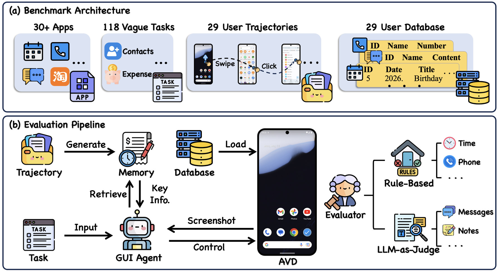

vague goal
full goal
Benchmark · Android GUI agents · user memory
Benchmarking GUI Agents on Long-Horizon User Interactions
1Zhejiang University2Ant Group†Corresponding author
Real users rarely spell everything out. They say “delete the alarm I just set” or “save the first call this morning as a contact”. MemU-Bench gives an Android agent the user's raw interaction history and asks it to finish such vague tasks, which can only be solved by recalling what the user did before. Outcomes are checked against the apps' own databases.
Please delete the alarm I just set.
Save the first call this morning as a contact named Courier in contacts app.
Play my favorite song in retro music app.
Which alarm? Which call? Which song?

Clock
Music
MapNumbers from the paper. The environment builds on AndroidWorld (Pixel 6 emulator, API 33).
The problem
Users omit details they no longer remember, so the missing piece is an objective fact that was visible
in their past interactions and is now buried in hundreds of steps of routine phone use. In the code, each
task has two forms: agents are evaluated on the vague goal (--eval_setting unclear_goal),
while the full goal spells out the missing value. Pick a task to see the gap. All text below is taken
from the task files and eval_results/human.json.
How a task runs
One task from the suite, played step by step with the AppMem pipeline. The instruction is the real
ambiguous goal of User0Short_CalendarAddEvent and the human step count comes from
human.json; the screenshots, memory entries, retrieved text and the agent's 18 steps are
illustrative.

Mapsclick09:21
Mapsclick09:22
Clockclick09:30
Clockclick09:31
Clockclick09:31Level-1 histories have < 400 screenshots, Level-2 > 700. Shown with a 4-frame window; the paper uses W = 10.
I plan to have a picnic at the location I just marked on the mapBarstow from 2 p.m. to 6 p.m. the day after tomorrow. Please help me add this schedule to the simple calendar app.
open_app("Calendar")
Answered an incoming call from an unsaved number in the morning.
Details · 138 1122 3344Searched the map for Barstow and opened the result.
Details · BarstowCreated a new afternoon alarm.
Details · 14:00Rule-based check · calendar database before vs. after
is_successful = 1 → counts toward SR
Steps against the human reference
16 / max(18, 16) = 0.89 → this task's term in IE (averaged over successful tasks) and SPL (averaged over all tasks)
Proposed method
AppMem is a training-free framework that turns the raw history into an app-centric memory bank, keeps
interrupted intents together across app switches, and answers a vague instruction by first inferring which
apps could hold the missing context. Every step is run by the evaluated model itself; in the code both
stages use the model set in .env and either can be swapped for your own method.
A fixed-size window (W = 10 screenshot–action pairs) slides over the history. Inside each window three stages turn the raw trace into memory entries, one per app:
App: osmand
Event: searched the map for Barstow, saved a marker
Details: Barstow # hard data: numbers, names, sizes
State: ongoing | finished
Start Time: … End Time: …Field layout from memory_generation/memory/base.py; the values are illustrative.
Instead of searching the whole history, retrieval first infers which apps could hold the missing context and reads only their entries, in up to K = 3 rounds.
In the code, κ is saved as user_history next to the goal and given to the agent at every
step as “generated information about the user's previous operations”.

Benchmark design
Operators followed intent-level sketches on an emulator, using it like a real phone: accidental touches, redundant app switches, sessions spread over hours. Screenshots and actions were logged every 0.3 s and identical frames removed.
Level-1: < 400 history screenshots · Level-2: > 700
After each trajectory the emulator state is frozen: system time recorded and every involved app's
database pulled. Restoring that snapshot (e.g. snapshot_0_short) reproduces the exact phone
the operator left behind.
A cascade of checks: rule-based verification of the app's database records; an LLM judge only for free-text fields such as message bodies; a VLM judge on screenshots for the few tasks whose database is inaccessible. Human step counts give the efficiency reference.
Tasks per target app (Table 7 of the paper; the same counts as app_name in task_evals/fixed_tasks/).
By app category (Figure 3 of the paper)

Metrics
Success alone is not evidence of memory: an agent can finish a vague task by searching app after app.
IE and SPL therefore compare the agent's steps with a human's on the same task
(eval_results/human.json, 2 to 19 steps per task). eval_metrics.py also reports SR
and SPL separately for Level-1 and Level-2.
Share of the N tasks that end in success; C is the set of successful tasks.
Success and efficiency together: every task counts, failures score 0, successes are discounted when the agent takes more steps than the human.
Step efficiency over successful tasks only, in [0, 1]. A low IE means the agent reached the goal by exploring for clues instead of recalling them.
hi: human steps on task i · ai: agent steps on task i.
Results
Nine backbones, each run three ways: Vanilla (no history), w/ Summary (the same window iteratively summarizes the history, and key information is retrieved from the summary) and w/ AppMem. The evaluated model performs all memory and summary operations itself; W = 10, K = 3, temperature 0, one complete run per model.
Table 2 of the paper. SR and SPL in %, IE in [0, 1]; higher is better, except for the L1 − L2 gap (δ = SPLL1 − SPLL2, computed from the table; closer to 0 means more robust to long histories). Bold marks the best value within each backbone; differences are against Vanilla.
Ablation on Qwen3.5-397B-A17B (Table 3). MS: memory size; TE: retrieval tokens per successful task; CT: retrieved tokens added at execution. Lower is better for MS, TE, CT.
| Setting | SPL | MS | TE | CT |
|---|---|---|---|---|
| Full AppMem | 47.1 | 8.8K | 6.1K | 0.10K |
| w/o intent continuation | 42.4 | 15.3K | 10.7K | 0.11K |
| w/o app inference | 48.5 | 8.8K | 17.8K | 0.15K |
| w/o info filtering | 41.8 | 8.8K | 9.7K | 2.89K |
| w/o sufficiency check | 45.3 | 8.8K | 4.9K | 0.09K |
Intent continuation keeps memory complete and compact (SPL −4.7 and memory 8.8K → 15.3K tokens without it); information filtering keeps the agent's context small; app inference mainly cuts retrieval cost (17.8K → 6.1K tokens) at nearly the same SPL.
| Qwen3.5-397B-A17B | IE | SR | SPL |
|---|---|---|---|
| w/ Inquiry (asks the user) | 0.62 | 39.0 | 24.1 |
| AppMem, dense RAG retrieval | 0.87 | 43.2 | 37.5 |
| AppMem, app-guided | 0.90 | 52.5 | 47.1 |
Replacing app-guided retrieval with a bge-m3 retriever over the top-3 entries costs 9.3 SR and 9.6 SPL (Table 4); on GPT-5.5 it drops from 66.9 to 50.5 SPL. Asking the user for coarse clues instead of using history lifts SR, but extra steps keep IE at 0.62 (Table 6). Retrieval is also cheaper than with a summary: 8.5K → 4.2K tokens per successful task for Gemini-3.1-Pro, 12.0K → 9.9K for Claude-Opus-4.8 (Table 5).
The bottleneck is memory, not execution: given precise instructions, MAI-UI-8B reaches 61.9% SR, a 55.1-point gap over its 6.8% with summarized history. In a manual error analysis of the Summary baseline, 57.6% of tasks fail with the key information missing, against 6.8% that fail although it was retrieved.
Quick start
Download the data from Hugging Face
(apks/, user_database/, user_history/), create the
MemUBenchAvd emulator (Pixel 6, API 33) and set MODEL, API_KEY,
BASE_URL in .env. Full instructions are in the
README.
python batch_restore_and_snapshot.py --install-apps --apk-dir ./apkspython memory_generation/memory/generate_memory.py \
--session_paths ./user_history \
--output_path ./user_information/memory/${MODEL_NAME}.json \
--env_file .envpython retrieve_information/retrieve_information.py \
--method memory \
--path ./user_information/memory/${MODEL_NAME}.json \
--output ./relevant_information/memory/${MODEL_NAME}.json \
--log_path ./retrieve_log/memory/${MODEL_NAME}.txt \
--env_file .envpython run_memubench.py \
--suite_family memory_suite \
--checkpoint_dir ./checkpoint_results/${MODEL_NAME}/memory/run1 \
--method with_history \
--user_information_path ./relevant_information/memory/${MODEL_NAME}.json \
--eval_setting unclear_goal \
--env_file .envpython eval/eval_checkpoint.py \
--checkpoint_dir ./checkpoint_results/${MODEL_NAME}/memory/run1 \
--output ./eval_results/${MODEL_NAME}_memory.json
python eval/eval_metrics.py \
--ref ./eval_results/human.json \
--eval ./eval_results/${MODEL_NAME}_memory.json \
--output ./metric_results/memory.json
Replace the memory generator with any script and its output can take any shape. Add a retrieval
module with get_filtered_history(goal, path, …), register it in
retrieve_information/__init__.py and pass --method your_own_method.
Execution and scoring stay unchanged as long as the retrieval output looks like this:
{
"results": [
{
"goal": "the ambiguous task instruction",
"subdir": "short",
"user_history": "the retrieved information for this task"
}
]
}@article{liu2026memubench,
title = {MemU-Bench: Benchmarking GUI Agents on Long-Horizon User Interactions},
author = {Liu, Yizhou and Lu, Zhengxi and Tang, Fei and Qiu, Yiwen and Du, Yong and Chen, Tongbo and Chen, Bofan and Jiang, Tao and Xu, Wenhao and Shu, Yunfeng and Zhang, Wenqi and Lu, Weiming and Xiao, Jun and Zhuang, Yueting and Shen, Yongliang},
journal = {arXiv preprint arXiv:2611.00191},
year = {2026}
}
@misc{chen2026knowubench,
title={KnowU-Bench: Towards Interactive, Proactive, and Personalized Mobile Agent Evaluation},
author={Tongbo Chen and Zhengxi Lu and Zhan Xu and Guocheng Shao and Shaohan Zhao and Fei Tang and Yong Du and Kaitao Song and Yizhou Liu and Yuchen Yan and Wenqi Zhang and Xu Tan and Weiming Lu and Jun Xiao and Yueting Zhuang and Yongliang Shen},
year={2026},
eprint={2604.08455},
archivePrefix={arXiv},
primaryClass={cs.AI},
url={https://arxiv.org/abs/2604.08455},
}